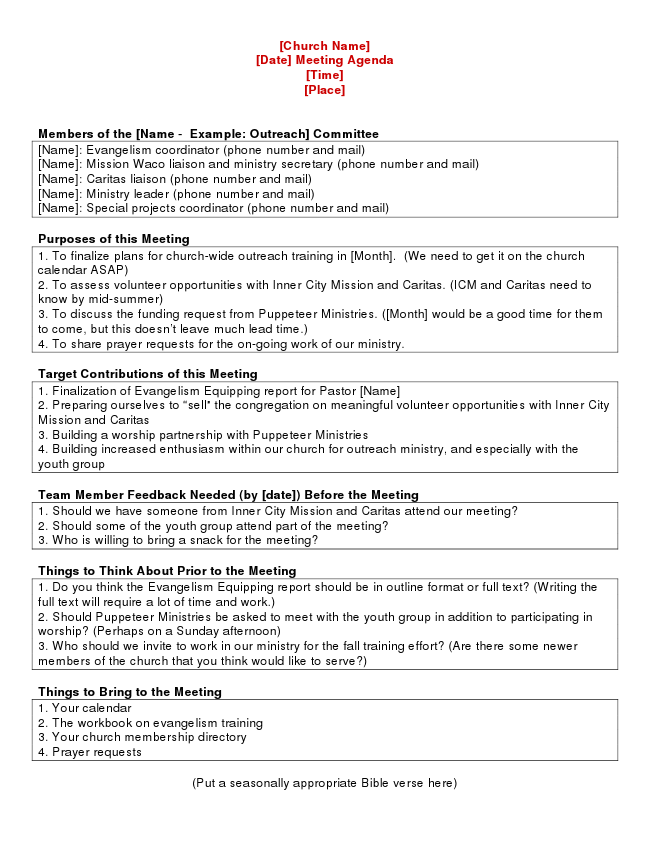

[Church Name] [Date] Meeting Agenda [Time] [Place]
Members of the [Name - Example: Outreach] Committee [Name]: Evangelism coordinator (phone number and mail) [Name]: Mission Waco liaison and ministry secretary (phone number and mail) [Name]: Caritas liaison (phone number and mail) [Name]: Ministry leader (phone number and mail) [Name]: Special projects coordinator (phone number and mail)
Purposes of this Meeting 1. To finalize plans for church-wide outreach training in [Month]. (We need to get it on the church calendar ASAP) 2. To assess volunteer opportunities with Inner City Mission and Caritas. (ICM and Caritas need to know by mid-summer) 3. To discuss the funding request from Puppeteer Ministries. ([Month] would be a good time for them to come, but this doesn’t leave much lead time.) 4. To share prayer requests for the on-going work of our ministry.
Target Contributions of this Meeting 1. Finalization of Evangelism Equipping report for Pastor [Name] 2. Preparing ourselves to “sell” the congregation on meaningful volunteer opportunities with Inner City Mission and Caritas 3. Building a worship partnership with Puppeteer Ministries 4. Building increased enthusiasm within our church for outreach ministry, and especially with the youth group
Team Member Feedback Needed (by [date]) Before the Meeting 1. Should we have someone from Inner City Mission and Caritas attend our meeting? 2. Should some of the youth group attend part of the meeting? 3. Who is willing to bring a snack for the meeting?
Things to Think About Prior to the Meeting 1. Do you think the Evangelism Equipping report should be in outline format or full text? (Writing the full text will require a lot of time and work.) 2. Should Puppeteer Ministries be asked to meet with the youth group in addition to participating in worship? (Perhaps on a Sunday afternoon) 3. Who should we invite to work in our ministry for the fall training effort? (Are there some newer members of the church that you think would like to serve?)
Things to Bring to the Meeting 1. Your calendar 2. The workbook on evangelism training 3. Your church membership directory 4. Prayer requests
(Put a seasonally appropriate Bible verse here)